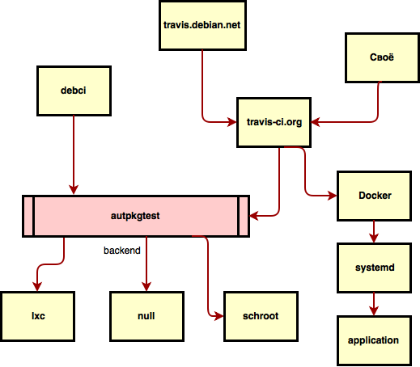
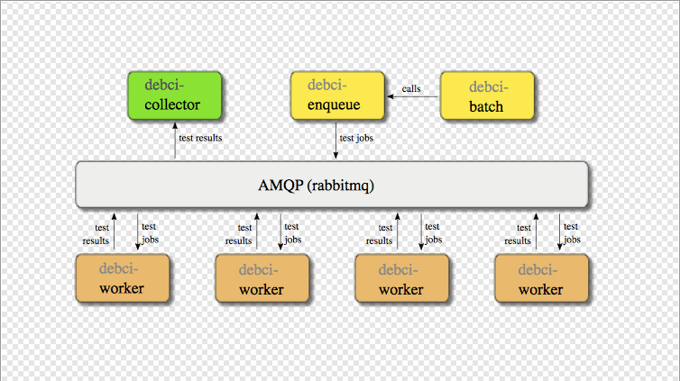

Тестирование debian пакетов в Travis-CI
Возникла передо мной такая задача: тестирование debian пакета. И требования:
- пакет устанавливает и стартует systemd сервис.
- используются native armhf библиотеки
Тестирование должно включать в себя:
- установка пакета на чистую систему: проверка наличия зависимостей
- запуск: проверка зависимостей в рантайме
- тестирование запущенного приложения: проверка prod конфигурации
Введение
Как обычно, первым делом необходимо оглядеться по сторонам и поискать уже существующие решения и подходы. Системе Debian уже 20+ лет и я не должен быть первым, кому пришло в голову тестирование пакетов. Поэтому я провел небольшое исследование экосистемы и получил следующее:

autopkgtest
Итак, в центре тестирования любого debian пакета находится autopkgtest. Это по сути набор правил для сборки и набор скриптов для запуска тестов. Более детально о том, как писать такие тесты и конфигурировать сборку пакетов можно почитать в официальной документации.
debci

debci - это официальная система для тестирования пакетов. Используется самим сообществом debian для continuous integration релизов. Представляет собой набор сервисов, которые общаются между собой через rabbitmq:
- debci-enqueue - добавление пакета в очередь на тестирование
- debci-worker - запуск autopkgtest на конкретной машине
- debci-collector - сбор результатов запуска и генерация статичного html
Идеально подходит для моей задачи, поэтому я решил глубоко разобраться с системой и настроить. Наибольшую сложность доставила настройка debci-worker:
- по умолчанию он запускает autopkgtest-virt-lxc, который запускает lxc контейнер, которому нужен настроенный lvm.
- логов работы нет
- документации почти нет
Методом проб и ошибок я поднял debci и понял следующее:
- никакой это не continuous integration. В моём понимании CI должен не только постоянно интегрировать пакет в систему, но и не пропускать ошибки интеграции в прод. В настоящий момент debci попросту показывает ошибку. Пакет как был в репозитории, так и останется там. Таким образом, если хочется большей автоматизации (а для проекта с одним разработчиком это важно), то необходимо настроить такую схему:
- CI собирает пакет и кладёт его в dev/unstable apt репозиторий
- CI дёргает debci, чтобы тот его протестировал
- debci запускает тестирование
- если тест прошел, то debci должен дёргать какой-то внешний скрипт, который
- перекладывает успешно протестированный пакет из dev/unstable в stable apt репозиторий Подобной интеграции сейчас просто нет, поэтому придется её писать.
- debci должен работать на отдельно выделенном сервере. Добавить собственный проект в уже работающий https://ci.debian.net нельзя. Там тестируются только пакеты из официального репозитория. Сервер должен быть на armhf. Найти облачный хостинг с такими серверами непросто, но у меня получилось.
- Зачем rabbitmq?
- Баги в настройке LXC и LVM. К слову в офциальной документации ничего про LVM не сказано.
travis.debian.net
Представляет собой скрипт для travis-ci, который создаёт docker образ, который внутри себя запускает сборку проекта и autopkgtest. Из положительных моментов:
- не нужен хостинг. travis-ci может абсолютно бесплатно собирать ваши приложения.
- запускает autopkgtest
Чего не хватает:
- пропуск стадии сборки пакета. Мой пакет собирается с помощью maven и структура никак не похожа на стандартную.
- тестирование systemd сервиса.
Своё
Итак, всё-таки ничего не подошло. В принципе, после достаточно продолжительного исследования, уже становится понятно, что нужно:
- сборка на travis-ci
- собственный docker образ, в котором
- устанавливается пакет
- запускается интеграционный тест, который
- выполняет интеграционные тесты напротив работающего приложения
Мне удалось собрать такую конфигурацию. Но дьявол, как обычно, в деталях, поэтому я приведу здесь наиболее яркие wtf:
- Вы знали, что разработчики systemd и docker друг друга ненавидят? У них что-то вроде архитектурного коллапса. Одни хотят легковесности, а другие говорят, что PID 1 проблему таки надо решать. Страдают, конечно, при этом простые пользователи. “Нельзя просто взять и запустить systemd в docker” ©. Есть правда восхитительная компания resin, которая очень много сделала, чтобы помочь.
- Билд машины travis-ci работают на архитектуре intel. Нужно хитро подключить qemu и надеяться, что проблема решена.
- При запуске resin-based контейнера, ваша команда запускается как ещё один systemd сервис (сам systemd запускается как pid 1). Команда может запустить systemd сервис, который будет тестировать, nginx, выполнить тесты, но не сможет убить systemd и завершить работу docker контейнера. Из-за этого необходимо сначала запускать контейнер в detached режиме, а выполнять тесты в работающем контейнере через docker exec. Как только последняя команда в travis.yaml выполнится, то travis сможет завершить билд с работающим контейнером.